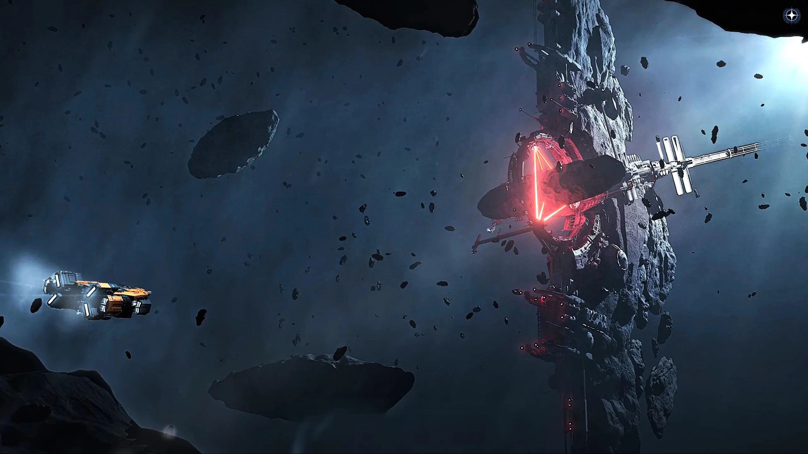
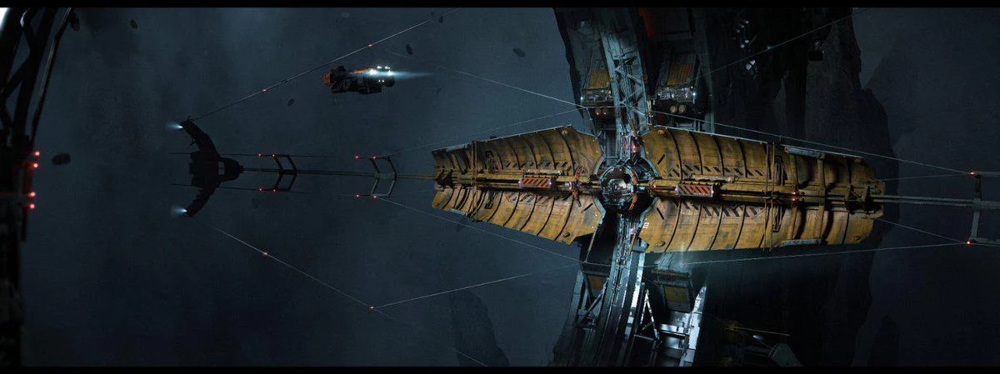
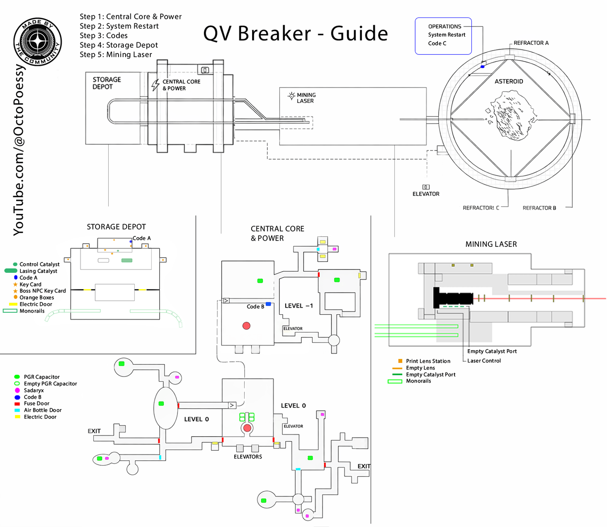
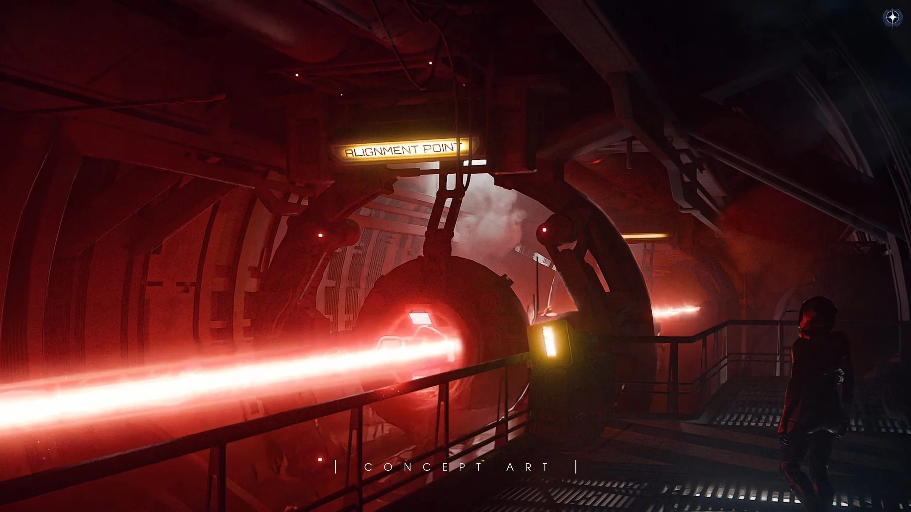
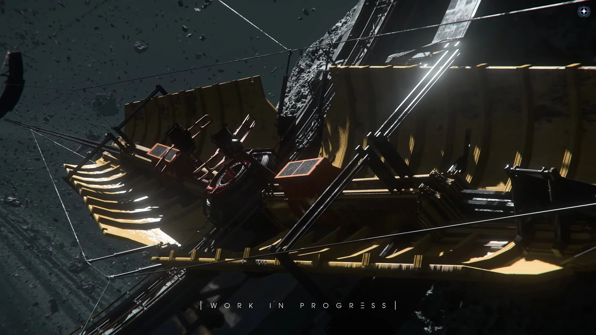
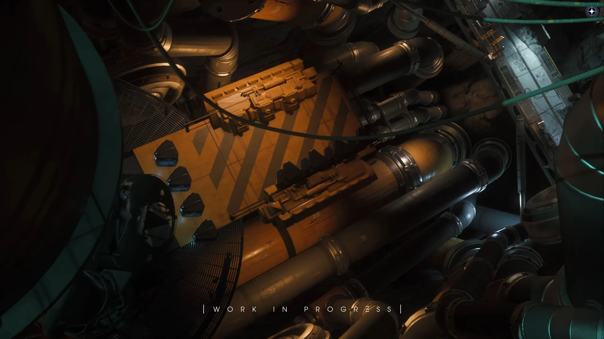
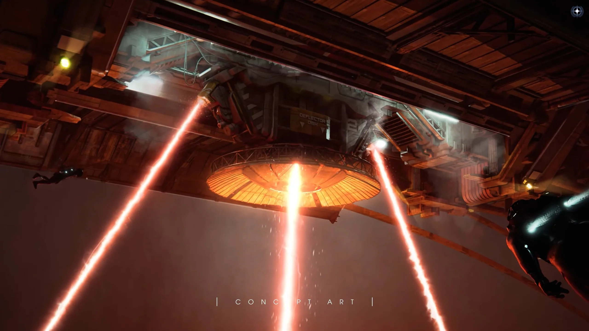

Guide d'Opération : Stations QV Breaker
Les "QV Breaker Stations" sont d'immenses installations minières abandonnées situées dans la ceinture d'astéroïdes de Keeger du système Nyx. Ces structures abandonnées proposent l'un des challenges industriels les plus complexes du Verse, mêlant exploration FPS, ingénierie, et minage de gros calibre.
1. Préparation & Contrats
Types de Missions
Vous pouvez accepter les contrats "QV Breaker Station Mining Rights" via le gestionnaire de contrats. Il en existe deux types :
- Exclusive (PvE) : Vous réserve l'instance. Idéal pour apprendre.
- Shared (PvPvE) : Partagée avec d'autres joueurs. Risques élevés de combats et de vol de ressources.
L'opération est hybride : vous devez préparer votre vaisseau ET votre équipement terrestre.
- Vaisseau : Un vaisseau avec une baie médicale (ex: Cutlass Red, Carrack) est fortement recommandé pour réapparaître en cas de mort lors de la phase FPS. Il vous faudra aussi un vaisseau capable de charger du minerai ou des composants lourds.
- Équipement FPS (Indispensable) : Armures lourdes, armes, beaucoup de munitions et de medpens. Surtout : Un Multi-Tool avec module de Rayon Tracteur (Tractor Beam) ou un fusil tracteur MaxLift pour manipuler les fusibles et batteries de la station.

2. Navigation et Plan de la Station
La station QV est construite autour d'un noyau central rocheux massif, avec un anneau extérieur reliant les sections principales (Centre d'Opération, Stations de Réfraction et la section Laser) via un système de nacelles (Gondolas). Il est très facile de s'y perdre sans connaître la carte.

Structure typique d'une station QV avec son réseau de gondoles.
3. Déroulement de l'Opération
L'objectif de la mission est de redémarrer le laser de minage géant de l'installation pour fendre un astéroïde extrêmement riche en ressources. Cela se fait en plusieurs étapes critiques :
Étape A : Rétablissement du courant
L'installation est plongée dans le noir. Dès votre atterrissage, il va falloir affronter les éventuels PNJ (ou joueurs) squatteurs. Votre priorité : localiser la salle des générateurs. Trouvez et installez les composants de puissance manquants (comme des fusibles ou condensateurs PGR) dispersés sur le site en utilisant votre rayon tracteur.
Étape B : Reboot des systèmes & Alignement
Une fois le courant rétabli, les choses sérieuses commencent. Naviguez dans la station pour accéder aux consoles de sécurité et trouver les codes d'alignement. Vous devrez réaligner les réfracteurs du grand laser central. Certaines pièces maîtresses peuvent nécessiter l'utilisation d'une fabricatrice (Fabricator) pour être reconstruites sur place !




Étape C : Le Laser et la Collecte
Une fois la station totalement fonctionnelle, prenez le contrôle du Laser de Minage massif. Cette phase demande précision et coordination si vous jouez en groupe pour fendre la roche sans surcharger le noyau. Ensuite, vous pourrez sortir avec vos vaisseaux de minage pour collecter les fragments extrêmement denses générés.
4. Salles de Butin (Loot Rooms)
Si le minage ne vous intéresse pas, sachez que les QV Breaker Stations abritent aussi d'anciennes réserves de sécurité. Les joueurs expérimentés y descendent souvent uniquement pour infiltrer les salles de stockage scellées. Vous pouvez y trouver des composants de vaisseaux de grade militaire ou furtif de très haut niveau, ainsi que de l'armement rare. Assurez-vous simplement de pouvoir repartir vivant avec !
Attention au vide, la sécurité n'est plus assurée. Bon courage, citoyen !